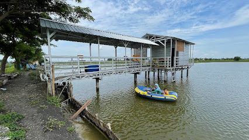

Alun-Alun Gresik terletak di Jl. KH. Wachid Hasyim, Bedilan, Kec. Gresik, Kabupaten Gresik, Jawa Timur 61114
Stadion Gelora Joko Samudro terletak di Jl. Veteran No.160, Gending Wetan, Singosari, Kec. Kebomas, Kabupaten Gresik, Jawa Timur 61123

Gubug Apung Nica Sayumi terletak di Beturing, Banjarsari, Kec. Cerme, Kabupaten Gresik, Jawa Timur 61171

Makam Sunan Gresik Syaikh Maulana Malik Ibrahim terletak di Jl. Malik Ibrahim No.52-62, Gapuro Sukolilo, Bedilan, Kec. Gresik, Kabupaten Gresik, Jawa Timur 61119